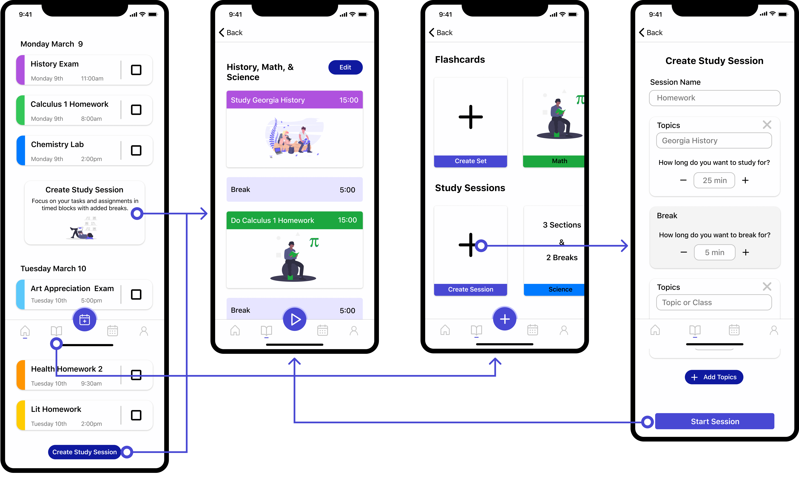

A planner targeted at students who don't use planners.
PlanIt is an iOS mobile prototype targeted at students who do not use planners or traditional methods to stay on top of their tasks and assignments. PlanIt was created as a class project alongside three other team members utilizing Goal-Directed Design. PlanIt focuses on three main challenges derived from user interviews and research to keep the focus on user goals while addressing business needs.
Challenges
- Encourage and simplify the process of staying organized
- Help students achieve their academic goals
- Reduce the stress of staying on track

Designed for students by students.
For my senior project class I worked alongside 3 other team members, Derek Duty, Ralston Fitler, and Iegor Gutyria on the PlanIt student planner and assistant app.
As students ourselves near the end of our college careers, we have an understanding of the importance of keeping on top of your classwork. We understand the difficulties and attitudes often associated with attending college, especially those starting their college career. We hypothesized that an automated planner would help encourage more students to use a planner to keep up with their school life. Specifically, we wanted to target the app at benefiting and assisting those who choose not to use a planner due to the effort required to fill out and keep up with a planner.
Understanding the domain, problem, and user with research.
We conducted research to establish an understanding of the potential domain, competitive technologies, and user goals/behaviors. To achieve this we utilized secondary research, competitive analysis, and user interviews. This research was used to design a solution that matches our user expectations, behaviors, and goals while aligning with business goals and requirements of our concept.
Targeted Information:
- Become more informed on the domain
- Explore current technologies and views
- Understand our users’ behaviors and goals
Examining the competitors to see what they offer and what is possible.
I examined planner apps available on the Google Play Store and Apple App Store before landing on five various apps to focus on. I noted features that were most prominent within the app and what was placed on the home screen to determine the main selling point of competitors.
I also looked at other automation technologies such as tax filing tools and cross-platform information-based tools such as job applications to explore the possibility of automation.
Competitors were often missing features and all lacked automation.
I discovered that although there are a large number of planner apps targeted at students, none of them target students not accustomed to using planners. They use traditional means of manually inputting information the way you would with a physical planner. No automation or simplification options are available and each app requires manual input of each detail.
In most cases, the apps focus on a monthly overview rather than a more bite-sized weekly or daily view. Although some offer the option of a weekly or daily view, most menu systems are loaded with options creating confusion and extra steps when navigating these screens.

The competitive audit feature results
Understanding our users with interviews.
To properly understand who our users are and what their goals are, we conducted eight user interviews with a mix of college students who use planners and those who do not. One moderator was leading the conversation and I was one of the two facilitators making notes and asking the participants to expand on any points of interest. These notes were discussed among the group to find common points of interest.

Beginning to affinity mapping our ideas
Ease of use was the largest pain point:
The main pain points involved a general lack of time and the ease of use when relying on memory versus inputting their information into a planner. They found that utilizing planners required more time than they were willing to spend. If their memory fails them they would rely on their syllabuses as a reference. However, this often meant either finding the printed version or logging into their school's portal and navigating to find the appropriate file.
Sample questions from the interviews:
- Describe your typical study behavior.
- How do you typically prepare for a quiz or exam?
- Describe how you typically keep up with your day to day life events?
- Do you collaborate with other students to either prepare for the semester or any exams/quizzes?
Discoveries from interviews:
- The students who do not use a planner tend to procrastinate.
- Most of the students have commitments outside of class and must balance their time.
- The students who do not use planners are typically more focused on simply getting through school.
- Most students rely on the various syllabuses to keep up with classwork.
- Those who do not use planners rely on their memory to ensure they complete their work.
Modeling the interview data into personas.
We established a primary persona to clearly define our users' goals and target our focus when designing the app. The primary user does not use a planner or proactive approach to stay on top of their coursework. They often put work off to the last minute and rely on their memory to stay on top of tasks. They enjoy using their limited free time to enjoy their lives and not worry about school. Our primary focus and designs revolve around helping the primary user achieve their goals.
Primary User Goals:
- Complete his tasks quickly and without added effort.
- Be prepared for his exams without stressing.
- Enjoy his personal life and what little free time he has.
- Graduate college and move onto his career.


Defining the app's requirements.
To establish the app's requirements we put ourselves into our user's shoes with context scenarios. These scenarios included the environment, amount of time available, and potential distractions involved when the user would use the app. From these scenarios, we established the requirements which are what the app will do at a higher level.
The main requirements revolve around allowing the primary user, Alan, to minimize the amount of time and effort needed to keep up with their tasks. This includes an automated system that imports their tasks and events to save the user time. The ultimate goal is to allow Alan to stay on track with his coursework without requiring extra effort on his part to do so.
Primary Requirements:
- Easy access to information for the day.
- Balance time and keep track of their work.
- Help keep organized regarding classes.
- Make life easier and automate aspects of their life.
- Prepare them for the school week.
Designing the framework and flow of the screens.
I designed the layout around a few main concepts. These concepts revolved around the main interactions and screens. I wanted to create design solutions that included bite-sized content, automated processes, and an overall focus on helping the user balance their limited time. Alan wants to get through school and doesn't want to add extra work to do so. Thus we needed to make sure that our design adds value to his life without the cost of needing significant effort to use.
We focused on three main concepts:
- Stay organized: For the home screen, I focused on bite-sized content that prominently displays today's events and tasks without overwhelming the user. I also aimed to simplify the process of importing the data with automation.
- Achieve Goals: I wanted a simple way of marking tasks complete to encourage interaction and allow the user to easily understand what work they have left for the day and week. My first design included as a swipe gesture to mark as complete.
- Reduce Stress: Study sessions were created to simplify the process of studying for classes using the Pomodoro Technique to balance their studying with breaks. I wanted to make the process of being prepared for classes simple as a means of reducing stress.


A sample of a few detailed screen wireframe sketches
Refining and turning the design into a prototype.
Once we established the overall layout of our design we were able to move forward in creating the prototype so we could test our decisions. I suggested a printed prototype as it would allow flexibility when discussing what the user expected to be the proper interaction. This gave us a barebones digital layout to work from while maximizing our time for usability testing.
Low fidelity printouts for usability testing
Conducting usability tests to verify interactions.
We utilized a set of usability questions that had the user go through multiple scenarios to allow the user to interact with the main screens and flows while thinking aloud to disclose their thoughts and decisions. We conducted a total of three low-fidelity tests with random students from our university. These early tests were crucial to verifying our user flows and concepts before moving too far into our design direction.
Addressing areas of concern:
Although the paper prototype was not perfect, we still received great feedback to consider as we moved forward. Most of the confusion came from interactions and lack of clarity about features.
- The study session button placement on the home screen confused the users and they often associated it as a task for the day. To correct this I designed a card with a blurb describing study sessions to replace the first button and designed the rest to be distinct from the tasks.
- There was confusion around the intended flow for study sessions as most users did not understand the concept or the intended buttons to navigate the process. I simplified the process to be more direct. The cards on the study session screen were simplified and I removed a step to display the categories a screen earlier.
- The use of swipe gestures to mark tasks as complete caused confusion. My initial change involved a better introduction to the action in the onboarding in addition to an animation to hint at the action on the home screen.
- The navigation icons were not clear to the each participant. Although they said they could learn them, they were not easily recognized. We made the icons more uniform and simplified the design for the study session icon.
Creating the high-fidelity prototype.
Once we established and corrected the initial layout and interactions, we moved to Figma to create a medium-fidelity and eventually a high fidelity prototype. We focused the visual design around a light, friendly feel to avoid overwhelming the user utilizing light, inviting colors, and rounded corners.
Usability Testing to refine the design.
Due to COVID-19, we were only able to conduct three in-person rounds of usability testing with four random university students before moving to a digital environment. Despite this, we still used these tests to better refine our design as they offered great insight. The main concerns were over the study session concept and interaction with minor concerns over smaller interactions and functionality.
Addressing areas of concern:
- I simplified the flow and menu system for importing a syllabus/connecting to the school by reworking the options to be more prominent by placing it on the home screen tab bar as an action button.
- I reworked the icons and simplified the actions for the action buttons placed on the tab bar. In certain areas such as the study timer, I removed the button from the bar and opted for a different placement to make it more clear.
- Technical issues were addressed, including buttons that needed a larger target area for a better mobile experience and fixing back buttons that navigated incorrectly.
The largest area that needed correction was the study session flow.
The original flow and timer system for the study sessions were very confusing to users. The original concept was to give the user an option to automatically build a timed study session or manually decide topics to include. I pivoted and changed this section into a simplified timer that still incorporates topics and breaks to give the same value to the user.
The original flows for the study session with complicated and confusing process
The new flows for the study session with simplified timer and process
How we addressed the challenges.
Throughout the design process we focused on three challenges. We established these to be the three primary pillars of both what users wanted as well as a means of pushing our product above the others based on our interviews and research.
Focusing on these pillars allowed us to tackle the challenges in order from large to small to ensure we met all the expectations and requirements. Below is a breakdown of the three primary challenges.
Challenge 1:
Stay Organized
Our primary focus was on allowing students to stay organized and on top of their tasks. We wanted to make the experience and interaction with tracking tasks as simple and streamlined as possible.
There are inherent barriers to using physical planners that we sought to overcome. We implemented a flexible and automated system for inputting data from the class syllabus and school portal. Additionally, we focused on a daily overview to more easily allow the users to digest the information on their home screen.
Challenge 2:
Achieve Goals
We wanted to ensure that our app focused on helping students succeed in their classes. To achieve this we implemented a tracker under the profile page to allow the user to view their weekly progress in terms of completed assignments and exams for each class.
In addition to this, we added secondary features that allow users to study flashcards based on their classes or selected topics. Although this is not a primary use case for our app, we wanted to provide a place that would offer multiple routes to success in the classroom.
Challenge 3:
Reduce Stress
We explored the concept of reducing stress for our users as initial interviews discovered that our participants had to balance their classes, jobs, and personal lives and often had little free time.
Overall we kept a focus on simplicity and ease of use to achieve a light, stress-free environment while not requiring extra time from the user. We limited the amount of content on each screen and aimed to simplify the interactions required via automation. Additionally, we implemented a study timer that utilizes breaks between study sessions to focus their time and provide room to relax.
Additional screens from the final design.

My takeaways from this project.
Research is important. Good research is even more important. It is extremely beneficial to get as much information from interviews as possible as you never know what details will prove to be crucial down the road. There were points where we wished we had extra data points to create more concrete goals without as many assumptions.
Failure is a humbling but excellent teacher. Narrowing focus down into a single, complex solution can cause more headaches than stepping back and considering a simplified solution. Additionally, it is very important to realize when you should pivot and the fact you can to arrive at a better solution more closely aligned with the user's goals.